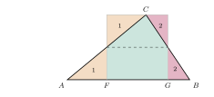
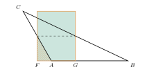
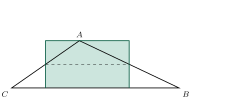

Aufgabe 6.3
Im Beweis mit dem Zerlegungsprinzip wurde ein Dreieck mit Grundlinie $g$ und Höhe $h$ als zerlegungsgleich zu einem Rechteck gleicher Höhe und halber Grundlinie erkannt.
Wie sieht die obige Zerlegung im Falle eines stumpfwinkligen Dreiecks aus? Bedeutet «zerlegungsgleich» und «inhaltsgleich» dasselbe?
- Wie funktioniert die Zerlegung bei einem spitzwinkligen Dreieck?
- Was ändert sich bei einem stumpfwinkligen Dreieck?
- Können zwei Figuren gleichen Inhalt haben, ohne zerlegungsgleich zu sein?
Schritt 1: die Zerlegung aus dem Kapitel

Die Mittellinie halbiert die Höhe. Von den beiden Seitenmitten fällt man die Lote auf $AB$, ihre Fusspunkte sind $F$ und $G$. Die Ecken bei $A$ und bei $B$ (Stücke $1$ und $2$) passen oben in die beiden Lücken. So entsteht ein Rechteck mit der vollen Höhe $h$ und der halben Grundlinie $\frac{g}{2}$.
Schritt 2: der stumpfe Winkel an der Grundlinie

Ist der Winkel bei $A$ stumpf, liegt $C$ links ausserhalb von $AB$. Dann fällt auch das Lot von der Mitte der Seite $AC$ ausserhalb: $F$ liegt links von $A$. Das Rechteck ragt über das Dreieck hinaus (schraffiert), und die Zerlegung in drei Stücke geht nicht mehr auf.
Schritt 3: die längste Seite als Grundlinie

Dasselbe Dreieck, nur mit $BC$ als Grundlinie. Der längsten Seite liegt der grösste Winkel gegenüber, hier der stumpfe. Die beiden Winkel an $BC$ sind spitz, beide Lote fallen auf $BC$, und die Zerlegung aus Schritt 1 funktioniert unverändert.
Im Video: Etappe 5 · Das Zerlegungsprinzip bei 3:06